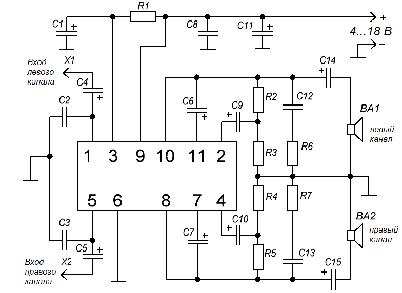
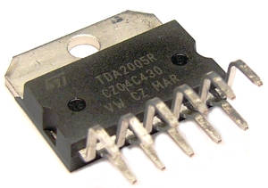

Усилитель звука на микросхеме ТДА2005
На рисунке 1 представлена схема стереоусилителя на микросхеме ТДА2005, который может работать автономно и является основой колонки.

Таблица 1
| Обозначение | Наименование | Номинал | Количество |
|---|---|---|---|
| BA1, BA2 | Динамическая головка | 10 Вт / 4 Ом | 2 |
| C1 | Конденсатор электролитический | 10 мкФ - 16 В | 1 |
| С2, С3 | Конденсатор | 150 пФ | 2 |
| С4, С5 | Конденсатор электролитический | 33 мкФ - 16 В | 2 |
| C6, C7 | Конденсатор электролитический | 100 мкФ - 16 В | 2 |
| C8, C12, C13 | Конденсатор | 0,22 мкФ | 2 |
| C9, C10 | Конденсатор электролитический | 220 мкФ - 16 В | 2 |
| C11 | Конденсатор электролитический | 470 мкФ - 16 В | 1 |
| C14, C15 | Конденсатор электролитический | 1000 мкФ - 16 В | 2 |
| DA1 | Микросхема | TDA2005 | |
| R1 | Резистор постоянный | 120 кОм | 1 |
| R2, R5 | Резистор постоянный | 1 кОм | 2 |
| R3, R4 | Резистор постоянный | 10 Ом | 2 |
| R6 , R7 | Резистор постоянный | 1 Ом | 2 |
Выходная мощность усилителя 10 Вт на канал при нагрузке 4 Ом, 15 Вт на канал при выxодной нагрузке 3,2 Ом. Микросхему усилителя необходимо установить на теплоотводе.
